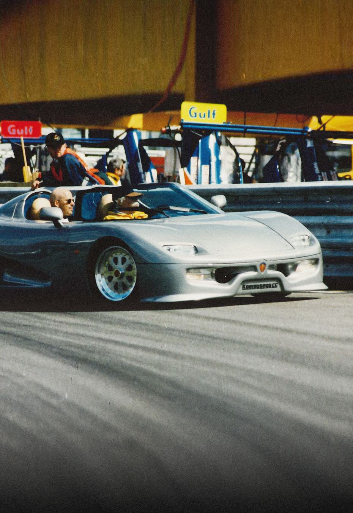

CC8
50
Discover ->WORLDS FIRST
MEGA GT FOR FOUR
Technological Achievements
In-house
Innovations

Staying ahead of the curve in a very competitive e-mobility landscape in true Koenigsegg fashion, we are offering our ground-breaking component to visionary clientele. Sharing this technology enables Koenigsegg to have a positive impact on CO2 reduction
ABOUT US
WHY WE
DO WHAT
WE DO

Every single detail if a Koenigsegg car is measured against our continuing goal: to enchance vehicle performance.
OUR HISTORY
DELIVERING ON
A SINGULAR
VISION
On Agust 12, 1994, a 22-year-old Christian von Koenigsegg decided to follow his dream and build the worlds greatest sports car. Koenigsegg Automotive is born.